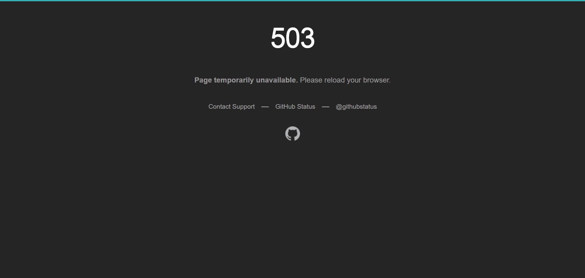

About JavaScript
Now we require the users to enable the JavaScript on the browser. Otherwise they will be refused to access the website.
Why we do that?
Because undeniably, the JavaScript plays an important role in website-building. And some incoming Services require the JavaScript. Some users may disable the JavaScript for security reasons. But I'm fully confident that our website is safety enough to enable it. You can inspect the Github repository if you're doubting it safety.
When will you guys implement them?
Very soon.
You mean...All the pages?
Yes. All the pages, including but not limited to the index.html and record.html. Further added blog article will be also added the attribute.
Localization Plan
Recently, we've received some complaint letters which are mainly about the localization problems
To begin with, the whole website is mainly written by English. It not only make the user from another nations easy to understand the article, but also benefit the contributors. But don't worry, we will carry out a localization project aimed to translate them into Simplified Chinese（简体中文）。Soon there ia a page called Translation Progress created.